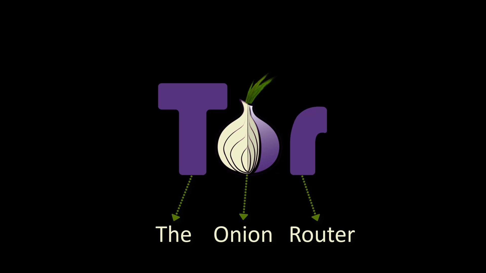
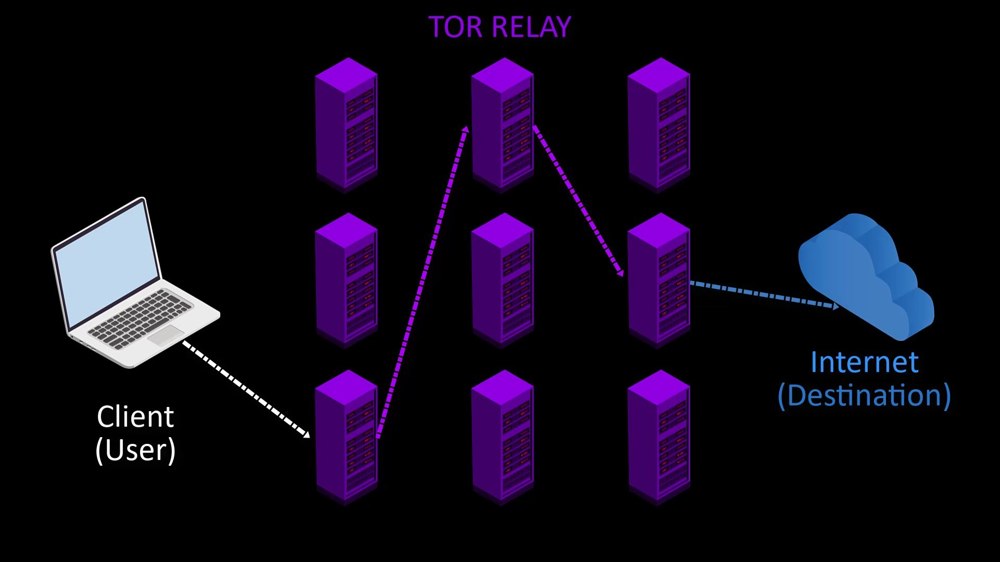
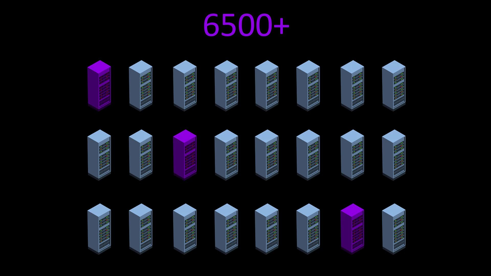
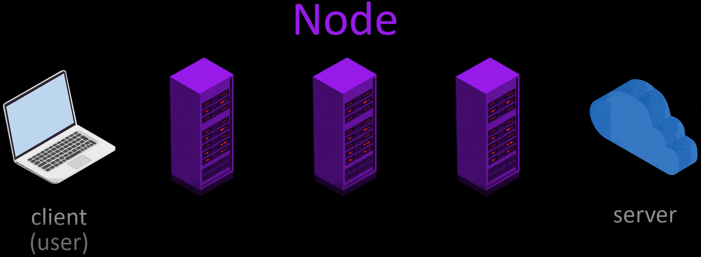
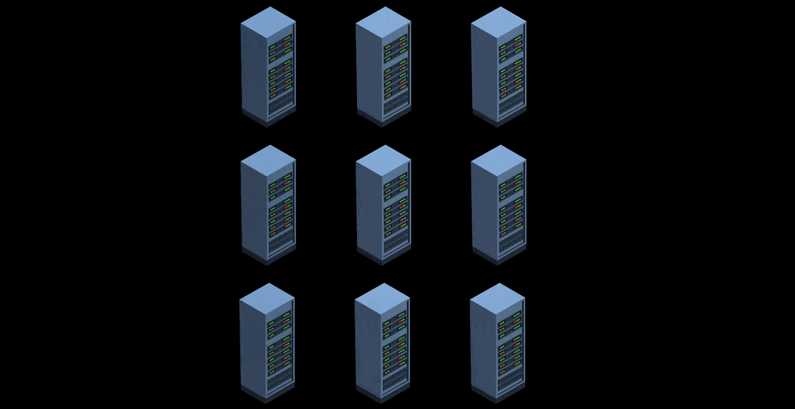
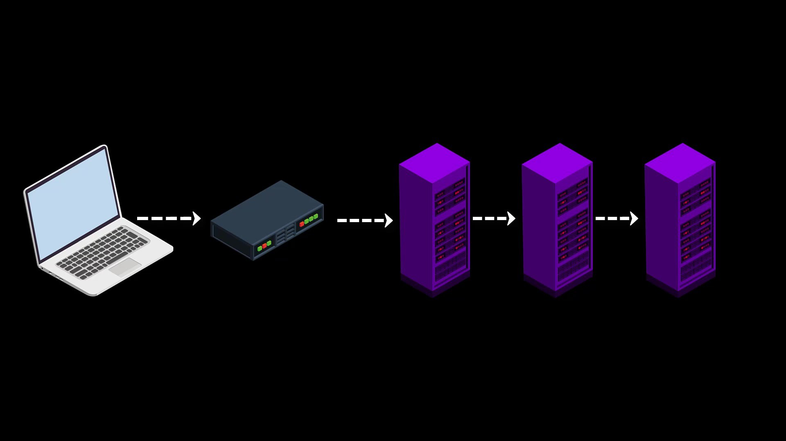
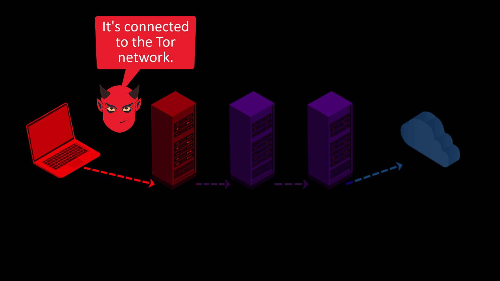
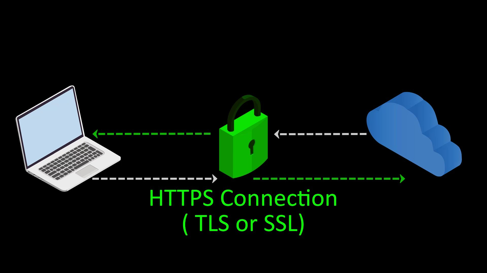

What is Tor?
The Tor project is an intelligence solution developed by the US Navy, to protect the U.S. intelligence communications online. Nowadays, however, it continues to serve as a non-profit open source organization that promotes privacy online, and is open to the masses. If you don't know what the expression "open source" means here; open source means that all source code of the project is shared publicly. Since all the source codes of the project are shared openly, the project can be developed much faster by many volunteers, ensuring the absence of malicious code. To sum up; If any project is open source, that project is under everyone's control.
The main source of funding for the Tor Project comes from donations collected from volunteers, as well as a large amount of support received from many sponsors, including the American government. Interestingly, while some agencies of the US government provide substantial support for the development of the project, others routinely spend a lot of resources to bypass the security of the Tor network. In other words, a lot of funding is provided by the United States to the Tor project at the same time for both the development and exploitation of security. This is interesting because Tor is not only available to the US government, it is free and easily available to people all over the world. Government support is thought to have different political and strategic reasons, and the Tor independent organization is working to improve its funding base by taking these criticisms into account. Nevertheless, considering that "U.S. Department of State Bureau of Democracy, Human Rights, and Labor" is the main supporting institution, it is claimed that the aid is not malicious, it is aimed at human rights. If you're curious, you can browse the Tor project's website for more sponsorship information.
The name Tor comes from the expression " The Onion Router" , which describes the multi-layered encryption and routing to ensure privacy.

Since Tor project was multi-layered, this structure was likened to the onion. So the name "onion" comes from here.Tor's main goal is to distort our footprints on the internet, allowing us to access the internet anonymously and uncensored.

How Does Tor Work ?
Tor is basically based on the obfuscation principle. In order to better understand the working structure and to see what kind of system we actually rely on, let's start by talking about the general working structure.
For the process of anonymizing the user, 3 of approximately 6500 volunteer servers are selected randomly.

These selected servers are called nodes. While connected to the Tor network, data packets are encrypted and transmitted through these three nodes to the target server. The server's response packet is encrypted in the same way and transmitted to the user, over three nodes. In this way, all traffic between the website and you is anonymized.
Quite generally, this is the way the Tor network works. However, let's continue to explain as it will make us more secure to know in a little more detail how our anonymity is provided through this structure.In example scenario, let's visit wikipedia.org via Tor and explain all the process steps that take place during our visit one by one.
- Firstly, for use the Tor network, i opened Tor Browser, and typed the address i want to go to.
- Tor first selects 3 random nodes from around 6500 active Tor servers. Tor servers work on a voluntary basis and in the selection of voluntary servers, servers that can provide high bandwidth and remain open for a long time are preferred. In other words, the number of these servers, which are currently around 6500, may change over time. And the list of all servers is publicly published.
- After the node points are selected randomly, my request packet is encrypted in 3 layers. The request package here is the package that states i want to go to "wikipedia.org".
- The first of the encrypted layers is decrypt by the key in the starting node, and the decrypted layer only gives the information of the next node. Thus, the first node knows to which node it will forward the request packet.
- Likewise, the middle node decrypt on the second layer with its own key. In this way, it learns which node to redirect the packet to and redirects it to.
- The last encrypted layer in the packet reaching the exit node is also decrypted and which server this packet should be transmitted to is learned by the last node and the packet is transmitted to the relevant server.
- In response to the packet reaching the server, the response packet of the server follows the same route and reaches the user, namely the client.
- In addition, in order to ensure the anonymity of users in long-term use, the selected nodes are changed randomly every 10 minutes by default, except for the first node. In addition, users have the opportunity to manually change the nodes randomly whenever they want.

This much information is enough for now, as going into much deeper and technical issues will not make you safer on the Tor network. This is how the Tor network generally works. We will be talking about this working structure in more detail in the following sections. If you are curious about the technical and scientific details behind the Tor network, there are many articles on this subject, you can easily access this detailed information on the Tor official website or if you do a short internet search. However, you can be sure that in this course I will talk about everything you need to know about anonymity and privacy.
What Makes the Tor Network Secure?
In structure of used by TOR, only the first node knows the real identity of the user. The exit node only knows to which server it should forward the packet. Thus, the first node doesn't know to which exit node the packet is sent to, while the last node doesn't know from whom the packet. Since the task of the middle node is only to transfer between the first node and the exit node, it cannot know the sender of the packet and which web server the packet will reach. In this way, anonymous communication between the client and the server is provided.
You can see the situation more clearly by looking at this table.
Entry Node
Know: The real IP address of the user
Unknown: Which web server the package will eventually reach.
Middle Node
Know: Address of the entry and exit node
Unknown: From whom the packet came from (the user's real ip address) and to which web server the package will eventually reach.
Exit Node
Know: Which web server the package will eventually reach.
Unknown: From whom the packet came from (the user's real ip address)

However, the structure used by the Tor is not that perfect in the real world. Now let's talk about the weaknesses of the Tor network and the solutions to these weaknesses.
Fundamental Weakness - 1
First of all, since the list of node servers you can connect to through Tor is published publicly, any authority(government, internet service provider, network administrator, etc. etcetera) can easily restrict your access to the Tor network by blocking each of these servers.

As a solution to this situation, Tor provides bridge connections. With the bridge connection provided to you before accessing the Tor network, you can bypass existing restricts and gain unlimited access to the Tor network.

Moreover, since all these bridge addresses are kept confidential, it is prevented from blocking all of them in possible situations.But, if it TOR can keep bridge connections private, why doesn't it keep the list of node servers private?
Essentially, there is no point in trying to keep the server information private. Because anyone who owns one of the volunteer servers can obtain and publish the list by running a client. Since all servers are located on the common Tor circuit, it is not difficult for any server to reach the list of other servers. In other words, due to the working structure of the Tor network, it is very easy to get information about which servers on the network are active and which servers are inactive. So keeping the server list private is pointless.
Fundamental Weakness - 2
When transferring your packet to the entry node and when your packet reaching the destination server from the exit node, your privacy can be breached by those who listen or control the entry and exit nodes.
If observers are only observing between you and the entry node, in other words, listening to the your network, they can only see that you are connecting to the Tor network. In some cases, even this may cause you to be under a deeper follow-up by becoming a suspect.

On the other hand, if they are listening to both your connection with the entry node and the connection between the exit node and the server with greater effort, by looking at the correlation between the time of sending your packet and the time of the packet reaching the server, they can conclude that you are interacting with this server and deepen the tracking.

Although it is low probability that this situation will occur, it may violate your security when it does. And this weakness is an unacceptable when we speak of true privacy and anonymity.
At this point, it is a must to use "VPN" in addition to Tor and to prefer "HTTPS" web addresses with "SSL/TLS" certificate. We will deal with these issues one by one in the course, but let's try to explain briefly for now.
If you use VPN before accessing the Tor network, observers will not be able to see that you are accessing the Tor network, as they will only see your VPN connection. This usage is called Tor over VPN.

Also, communicating only with servers with SSL certificates will encrypt the communication between the server and you, keeping sensitive information away from observers.

Fundamental Weakness - 3
Another point of risk is that the servers used as nodes and transferring your packages are provided by volunteers around the world. It is not surprising that among these volunteers there are various intelligence agencies and individuals or organizations intending to monitor Tor. In particular, the requirement that the preferred servers have high bandwidth and long active working time are conditions that are not easy for every volunteer to provide for free. Moreover, the possibility of dealing with copyrights and various lawsuits due to the traffic generated through their own servers makes people question the interests of people who endure such a trouble many times.

When this is the case, you don't know which node to trust. However, the probability of this insecurity by the tor community is considered very low. Considering that there are about 6500 nodes on the Tor network and the server selection is made on randomness, and it serves many users at the same time, it is considered low probability to make a point-by-point traffic analysis. However, probably this is a very innocent expectations. Because we do not know the limit and potential of the resources in the hands of an intelligence agency or any formation that has a high motivation to follow you, this danger always seems to be present. There are even some successful attacks on the Tor network itself.
Even so; since any observer is expected to be able to check both entry and exit nodes for tangible evidence, it is highly unlikely that the entry and exit node of three randomly selected servers belong to the same observer. Moreover, since Tor changes the middle and exit nodes every 10 minutes by keeping the entry node constant, it significantly reduces the probability that both the entry and exit node are being managed by the same observer.
In addition, as a result of attacks on the Tor network; it is the general expert opinion that it is more precise to expect target people to make mistakes that will reveal their privacy rather than focusing on the imperfect structure of the Tor network.
In short, it is not easy to achieve anonymity. Tor never guarantees 100% anonymity either. But in retrospect, even well-funded sophisticated attacks on Tor have not yielded definitive useful results.
Documents published by Edward Snowden also report that "NSA", has "major" problems in monitoring the Tor network.

However, as far as we know, there are two most common types of methods that compromise the Tor network's privacy rather than technical attacks.
- Malicious exit nodes
- Timing analysis
Malicious Exit Nodes
As we mentioned earlier, the servers of the Tor network are based on volunteering, and we never know who these volunteers really are and for what purpose they are providing this server resource. As a result of various tests, it is estimated that approximately 2.5% of the exit nodes of the Tor network are provided by malicious people. Although regular tests are carried out to detect malicious servers and removed them from the Tor network, it is a fact that this method does not provide a definitive solution.
What can malicious exit nodes do?
- Since it is the exit node, it does not know directly who you are, but it knows which web address you want to reach. However, you run the risk of revealing your real identity, directly or indirectly, through your communication or internet behavior.
- In addition to spying on your data, malicious Tor exit nodes can often perform a man-in-the-middle attack (MitM) that redirects your page request to a fake website

How can we be protected?
- As long as you connect to secure SSL encrypted (https..) websites, your data stays safe and cannot be compromised by a fake exit node.

- Being aware of the man-in-the-middle attacks, it is important for your security to check the address you want to go to and be aware of the sensitivity of the information you enter. Since you are using the Tor network, you should always be in control of all your steps, without thinking that you are completely safe.
Timing Analysis Attacks
These are the attacks that risk the most security.
Essentially, timing attacks are attacks that can be created with a wide variety of scenarios, the ones that most security risk. The main purpose of timing attacks is to determine the correlation between the activity performed and the time when the person accesses the Tor network.

For example, in 2013, Harvard student made bomb threats to avoid exam. This bomb-hoaxing was sent over the Tor network, after a certain period of time, using an e-mail service that self-destructed. However, despite all these security measures, the person making the hoaxing was caught. The main reason for his catch was that he sent the e-mail over the campus Wi-Fi network. The research team checked to see if anyone had accessed Tor through the local wireless networks. After all, there was only one person using the Tor network on campus, and it turned out that it was that person who sent the message. This is a fairly simple mistake of carelessness, but basically, the real identities of people can be revealed through such time matches.
Apart from this, if the observer has a high number of servers on the Tor network, it can identify the persons by analyzing the incoming and outgoing data in a similar way. However, as there will be a large number of Tor users online at any given moment, such a correlation would require extensive and long-term statistical analysis, making it almost impossible to get definitive conclusions. However, of course we have no way of knowing the potential resource available to the various organizations that have virtually unlimited power and truly global reach. So in theory, if the observer allocates enough resources for the target, there is always a possibility that the target might violate the anonymity and privacy.
In addition, apart from these two attacks, many inattentions that a person can make can directly reveal the identity of the person. However, if technical attacks other than inattentions are of interest to you, you can also take a look at the known attacks on the Tor network from the list in this lecture resource.
Types of attacks from the past to the present.
Source: Attacks on Tor
If you are not going to participate as a developer to actively contribute to the Tor project, the details of technical attacks are unnecessary for a normal user. Tor developers are responsible for resolving technical attacks. However, you can of course take a look at the attacks on the list in order to have general information.
How can we be protected?
While there is no direct way to protect yourself from timing attacks, keeping your personal activities under control can provide security. You need to act by taking all these parameters into account, including the internet you are connected to, your location, the computer you use, and whatever can be associated with you in real life. In short, you should be able to keep all the factors required for operational security called "OPSEC" under your control at all times.
Tor Hidden Services
Let's start by explaining a few concepts. You've probably heard of the concepts of "deep web", "dark web" and "surface web" before. The iceberg example is often used because it represents concepts well.
Surface Web
As in the iceberg analogy, it represents the surface of the web network, that is, a very small fraction of the overall web network indexed by search engines. For example, when you search using a search engine such as Google, all the web content you encounter only represents those in the surface web area. Websites classified in the surface web area are websites that have accepted to be able to be indexing by standard search engines such as Google. And they represent a very small fraction of the network when considering the entire web.
Deep Web
Unlike the Surface web, it represents all kinds of web content that search engines do not index.


For example, the admin panels of the sites are generally excluded from the indexing of search engines for security reasons. Thus, while the admin panel of the site cannot be found through the search engine, if we know its exact address, we can access this admin panel. In other words, the deep web area, which is excluded from the scope of standard search engines for this and many other reasons, is called "deep web".
Dark Web
Similar to the deep web, the dark web, on the other hand, is outside the scope of search engines on the surface web, and since it is located on the Tor network, it is only accessible over Tor.

Dark web is the general name of web addresses with onion domains kept on the Tor network and where privacy is at the forefront.
Websites with this onion domain can be created free of charge by anyone and published anonymously. The fact that websites can be created anonymously and free of charge has made this web network more vulnerable to abuse. Since this web network is mostly used for malicious purposes, it has been named as "Dark Web". In addition, websites that are in the dark web, that is, can only be accessed through the Tor network, are also called "Tor hidden services" or, more modernly, "onion services".If we need to talk briefly about onion services;
With the Onion service, you can publish a website over the Tor network without any third-party service provider for "hosting" or "domain" service. Moreover, because the entire connection is routed through the Tor network and encrypted, you can remain anonymous while publishing over the onion service.

With the explanations we have made so far, we have briefly mentioned many concepts that you need to know in general. In addition, we will be talking about these issues in more detail in the course, as the time comes.
Now let's continue with the explanations by considering the various tools and methods by which you can access the Tor network.
Accessing the Tor Network
Although there are more than one method to use the Tor network, we will consider several methods that are considered to be the safest in this course and we will perform the descriptions through these methods.
We will consider 3 different ways to securely access the Tor network, these are;
| Methods | Security Degree | |
|---|---|---|
| Tor Browser | It is a simple but not very safe method. | |
| Tails OS | It is a good method in most situations. | |
| Whonix via Qubes OS | It is the method considered the safest. | |
In the rest of the course, we will explain all these methods one by one. While explaining the methods, we will be talking about the advantages and disadvantages of the methods. In this way, you will know which method will meet your needs more accurately when you need it.
Is It Legal to Use the Tor Network?
Also, finally, let's clarify whether it is legal to use the Tor network.

In fact, Whether it is legitimate depends entirely on what purpose you are using the Tor network. So in most cases you wouldn't be accused just for connecting to the Tor network. Just being connected to the Tor network is not a direct crime. However, you are responsible for all your activities on the tor network. If you have criminal activities and you are caught, it is quite natural that you will be accused. In summary, any non-criminal activity won't pose a legal problem as it is carried out over the Tor network. If you have criminal activities, nothing can protect you. In this course your aim is to gain the basic awareness that will enable you to protect your personal data. No one can promise you one hundred percent anonymity. If it does, it is not true. You will already see the limits of anonymity and privacy in this course.
In the next section, we will continue with the explanations Tor Browser, which is first use method.


Free Anonymity & Privacy Course on Youtube
You can click on this card to access the free youtube playlist of the tutorial series. Please note that this tutorial series is introductory training only. This free tutorial series will only provide you with an introductory knowledge of anonymity and privacy.